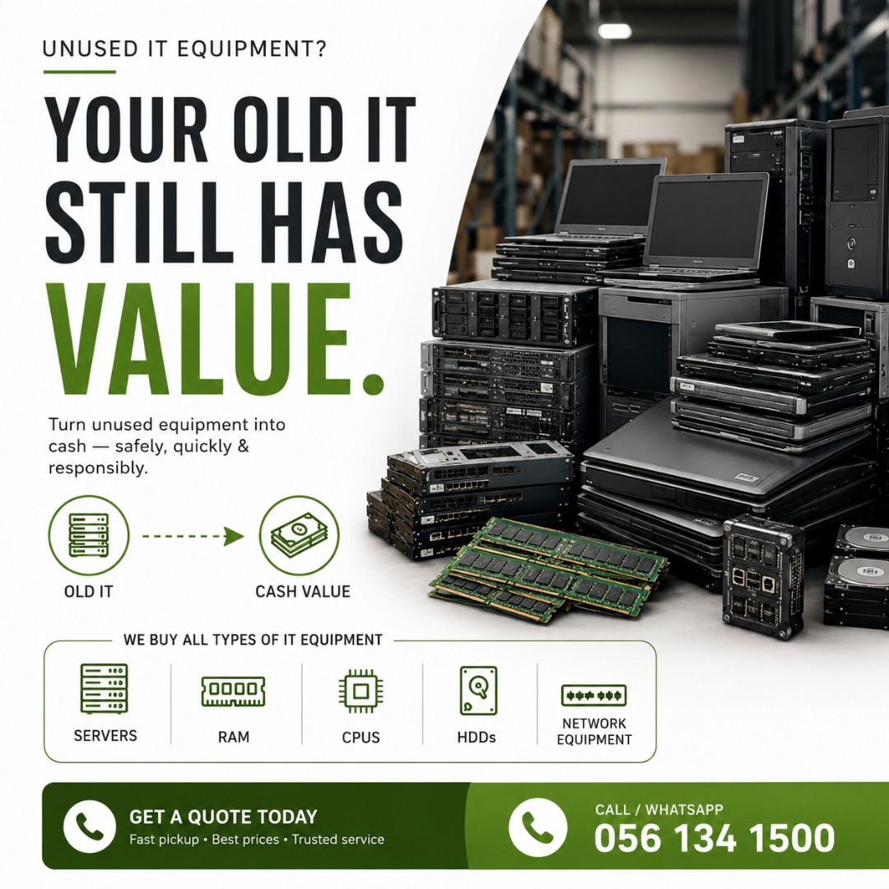
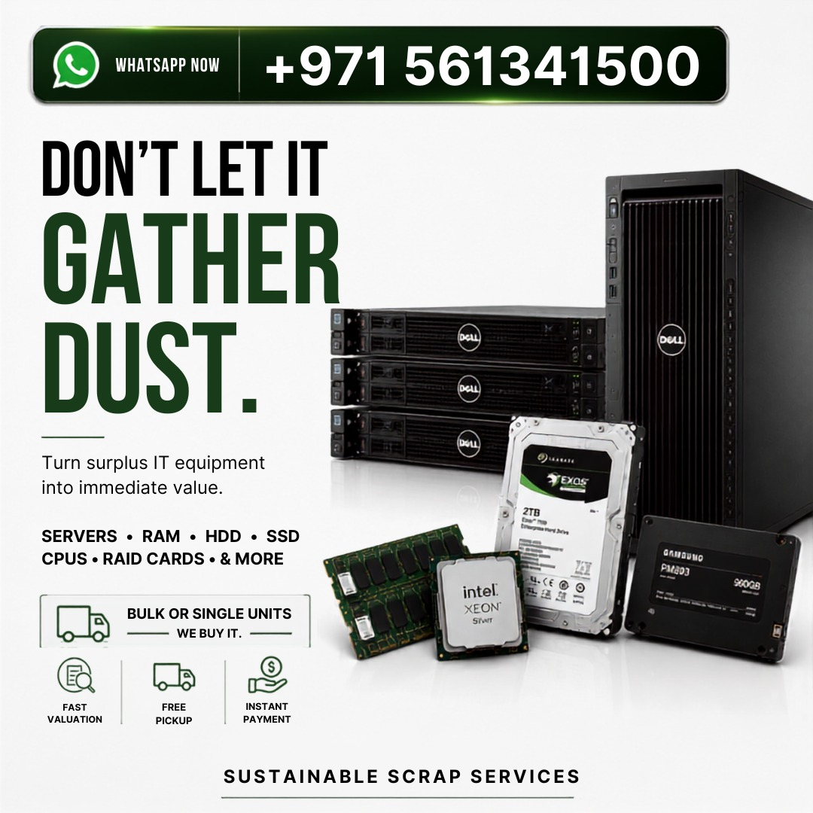
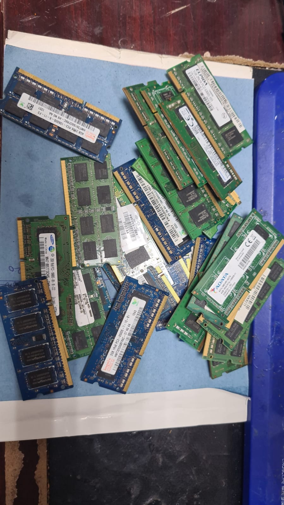
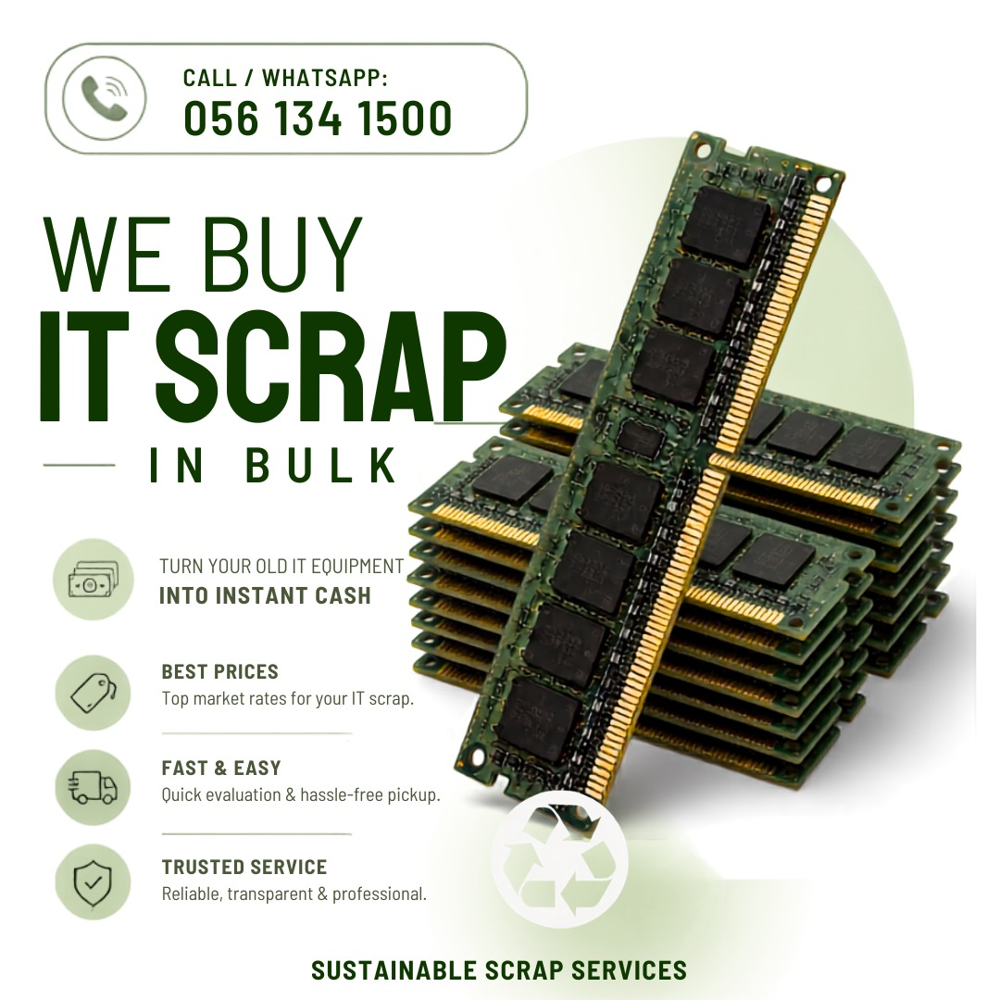
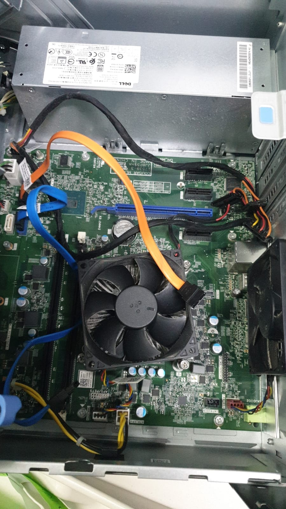
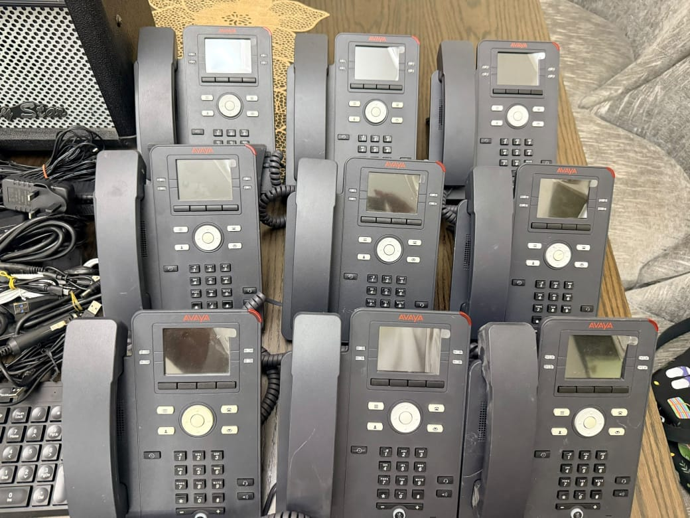
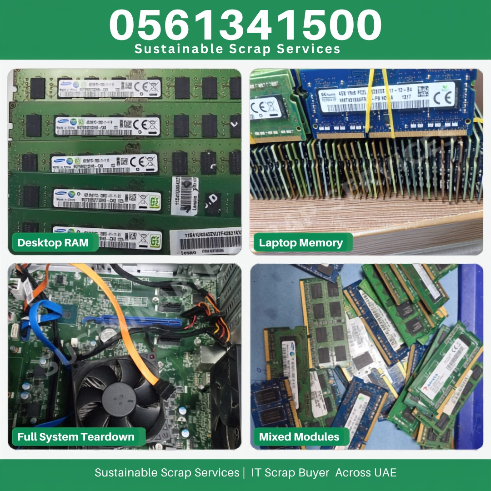

Best IT Scrap Buyers in UAE: A Complete Guide for Businesses
How to choose a reliable IT scrap buyer in the UAE — what to check, what fair pricing looks like, and the questions to ask before you hand over equipment.
Read the guide →Practical guides for UAE businesses on retiring IT equipment responsibly — from server decommissioning to data security and getting fair value for old hardware.

How to choose a reliable IT scrap buyer in the UAE — what to check, what fair pricing looks like, and the questions to ask before you hand over equipment.
Read the guide →
A practical checklist for decommissioning old servers in Dubai — data wiping, chain-of-custody, and what to look for in a server disposal partner.

What UAE businesses need to know about e-waste recycling — categories of e-waste, why responsible disposal matters, and how the process works in practice.

A realistic look at what determines resale and scrap value for old servers, laptops, RAM, CPUs and hard disks in the UAE market.

Why deleting files isn't enough, what certified hard drive destruction actually involves, and how UAE businesses can protect themselves when retiring storage.

What happens to retired laptops and desktops in Dubai, how bulk fleet recycling works, and what businesses should do before handing over old computers.

How end-to-end IT asset disposal works for offices and data centers in the UAE, from inventory through pickup to final documentation.
Beyond compliance — the practical business case for e-waste recycling in the UAE, from cost recovery to cleaner storage space and audit-ready records.
Weighing server scrap against refurbishment for retiring UAE data center hardware — cost, risk, and which option actually makes sense case by case.
A start-to-finish guide for UAE businesses on disposing of IT equipment responsibly — planning, data security, valuation, and documentation.